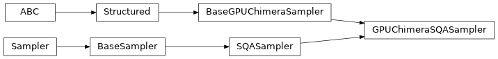

openjij.sampler.chimera_gpu
Contents
openjij.sampler.chimera_gpu#
Submodules#
Package Contents#
Classes#
Sampler with Simulated Annealing (SA) on GPU. |
|
Sampler with Simulated Quantum Annealing (SQA) on GPU. |
- class openjij.sampler.chimera_gpu.GPUChimeraSASampler(beta_min=None, beta_max=None, num_sweeps=1000, schedule=None, num_reads=1, unit_num_L=None)[source]#
Bases:
openjij.sampler.sa_sampler.SASampler,openjij.sampler.chimera_gpu.base_gpu_chimera.BaseGPUChimeraSamplerSampler with Simulated Annealing (SA) on GPU.
Inherits from
openjij.sampler.sampler.BaseSampler.- Parameters
beta_min (
float) – Minimum inverse temperature.beta_max (
float) – Maximum inverse temperature.num_sweeps (
int) – Length of Monte Carlo step.schedule_info (
dict) – Information about a annealing schedule.num_reads (
int) – Number of iterations.unit_num_L (
int) – Length of one side of two-dimensional lattice in which chimera unit cells are arranged.
- Raises
ValueError – If variables violate as below.
- trotter number is odd. –
- no input "unit_num_L" to an argument or this constructor. –
- given problem graph is incompatible with chimera graph. –
AttributeError – If GPU doesn’t work.
- properties#
- property adjacency Dict[dimod.typing.Variable, Set]#
Adjacency structure formatted as a dict, where keys are the nodes of the structured sampler and values are sets of all adjacent nodes for each key node.
- Return type
Dict[dimod.typing.Variable, Set]
- property edgelist#
Edges/interactions allowed by the sampler.
- property nodelist#
Nodes/variables allowed by the sampler.
- property parameters#
Parameters as a dict, where keys are keyword parameters accepted by the sampler methods and values are lists of the properties relevent to each parameter.
- remove_unknown_kwargs(**kwargs) Dict[str, Any]#
Remove with warnings any keyword arguments not accepted by the sampler.
- Parameters
**kwargs – Keyword arguments to be validated.
- Return type
Dict[str, Any]
Returns: Updated kwargs dict.
Examples
>>> import warnings >>> sampler = dimod.RandomSampler() >>> with warnings.catch_warnings(): ... warnings.filterwarnings('ignore') ... try: ... sampler.remove_unknown_kwargs(num_reads=10, non_param=3) ... except dimod.exceptions.SamplerUnknownArgWarning: ... pass {'num_reads': 10}
- sample(bqm: Union[openj.model.model.BinaryQuadraticModel, dimod.BinaryQuadraticModel], beta_min: Optional[float] = None, beta_max: Optional[float] = None, num_sweeps: Optional[int] = None, num_reads: Optional[int] = None, schedule: Optional[list] = None, initial_state: Optional[Union[list, dict]] = None, updater: Optional[str] = None, sparse: Optional[bool] = None, reinitialize_state: Optional[bool] = None, seed: Optional[int] = None) openjij.sampler.response.Response#
Sample Ising model.
- Parameters
beta_min (
float) – minimal value of inverse temperaturebeta_max (
float) – maximum value of inverse temperaturenum_sweeps (
int) – number of sweepsnum_reads (
int) – number of readsschedule (
list) – list of inverse temperatureinitial_state (
dict) – initial stateupdater (
str) – updater algorithmreinitialize_state (
bool) – if true reinitialize state for each runseed (
int) – seed for Monte Carlo algorithmsparse (Optional[bool]) –
- Returns
results
- Return type
Examples
for Ising case:
>>> h = {0: -1, 1: -1, 2: 1, 3: 1} >>> J = {(0, 1): -1, (3, 4): -1} >>> sampler = openj.SASampler() >>> res = sampler.sample_ising(h, J)
for QUBO case:
>>> Q = {(0, 0): -1, (1, 1): -1, (2, 2): 1, (3, 3): 1, (4, 4): 1, (0, 1): -1, (3, 4): 1} >>> sampler = openj.SASampler() >>> res = sampler.sample_qubo(Q)
- sample_hubo(J: Union[dict, openj.model.model.BinaryPolynomialModel, cimod.BinaryPolynomialModel], vartype: Optional[str] = None, beta_min: Optional[float] = None, beta_max: Optional[float] = None, num_sweeps: Optional[int] = None, num_reads: Optional[int] = None, schedule: Optional[list] = None, initial_state: Optional[Union[list, dict]] = None, updater: Optional[str] = None, reinitialize_state: Optional[bool] = None, seed: Optional[int] = None) openjij.sampler.response.Response#
Sampling from higher order unconstrainted binary optimization.
- Parameters
J (
dict) – Interactions.vartype (
str, openjij.VarType) – “SPIN” or “BINARY”.beta_min (
float, optional) – Minimum beta (initial inverse temperature). Defaults to None.beta_max (
float, optional) – Maximum beta (final inverse temperature). Defaults to None.schedule (
list, optional) – schedule list. Defaults to None.num_sweeps (
int, optional) – number of sweeps. Defaults to None.num_reads (
int, optional) – number of reads. Defaults to 1.init_state (
list, optional) – initial state. Defaults to None.reinitialize_state (
bool) – if true reinitialize state for each runseed (
int, optional) – seed for Monte Carlo algorithm. Defaults to None.updater (Optional[str]) –
- Returns
results
- Return type
- Examples::
- for Ising case::
>>> sampler = openjij.SASampler() >>> J = {(0,): -1, (0, 1): -1, (0, 1, 2): 1} >>> response = sampler.sample_hubo(J, "SPIN")
- for Binary case::
>>> sampler = ooenjij.SASampler() >>> J = {(0,): -1, (0, 1): -1, (0, 1, 2): 1} >>> response = sampler.sample_hubo(J, "BINARY")
- sample_ising(h, J, beta_min=None, beta_max=None, num_sweeps=None, num_reads=1, schedule=None, initial_state=None, updater=None, reinitialize_state=True, seed=None, unit_num_L=None)[source]#
Sample with Ising model.
- Parameters
h (
dict) – linear biasesJ (
dict) – quadratic biasesbeta_min (
float) – minimal value of inverse temperaturebeta_max (
float) – maximum value of inverse temperaturenum_sweeps (
int) – number of sweepsnum_reads (
int) – number of readsschedule (
list) – list of inverse temperatureinitial_state (
dict) – initial stateupdater (
str) – updater algorithmreinitialize_state (
bool) – if true reinitialize state for each runseed (
int) – seed for Monte Carlo algorithmunit_num_L (
int) – number of chimera units
- Returns
results
- Return type
Examples:
>>> sampler = openjij.sampler.chimera_gpu.gpu_sa_sampler.GPUChimeraSASampler(unit_num_L=2) >>> h = {0: -1, 1: -1, 2: 1, 3: 1}, >>> J = {(0, 4): -1, (2, 5): -1} >>> res = sampler.sample_ising(h, J)
- sample_qubo(Q, **parameters)#
Sample from a QUBO model using the implemented sample method.
- Parameters
Q (
dict or numpy.ndarray) – Coefficients of a quadratic unconstrained binary optimization- Returns
results
- Return type
- property structure _Structure#
Structure of the structured sampler formatted as a
namedtuple()where the 3-tuple values are thenodelist,edgelistandadjacencyattributes.- Return type
_Structure
- to_networkx_graph()#
Convert structure to NetworkX graph format.
Note that NetworkX must be installed for this method to work.
- Returns
A NetworkX graph containing the nodes and edges from the sampler’s structure.
- Return type
networkx.Graph
- valid_bqm_graph(bqm: dimod.BinaryQuadraticModel) bool#
Validate that problem defined by
dimod.BinaryQuadraticModelmatches the graph provided by the sampler.- Parameters
bqm (dimod.BinaryQuadraticModel) –
dimod.BinaryQuadraticModelobject to validate.- Returns
Boolean indicating validity of BQM graph compared to sampler graph.
- Return type
- class openjij.sampler.chimera_gpu.GPUChimeraSQASampler(beta=10.0, gamma=1.0, trotter=4, num_sweeps=100, schedule=None, num_reads=1, unit_num_L=None)[source]#
Bases:
openjij.sampler.sqa_sampler.SQASampler,openjij.sampler.chimera_gpu.base_gpu_chimera.BaseGPUChimeraSamplerSampler with Simulated Quantum Annealing (SQA) on GPU.
Inherits from
openjij.sampler.sqa_sampler.SQASampler.- Parameters
beta (
float) – Inverse temperature.gamma (
float) – Amplitude of quantum fluctuation.trotter (
int) – Trotter number.num_sweeps (
int) – number of sweepsschedule_info (
dict) – Information about a annealing schedule.num_reads (
int) – Number of iterations.unit_num_L (
int) – Length of one side of two-dimensional lattice in which chimera unit cells are arranged.
- Raises
ValueError – If variables violate as below.
- trotter number is odd. –
- no input "unit_num_L" to an argument or this constructor. –
- given problem graph is incompatible with chimera graph. –
AttributeError – If GPU doesn’t work.
- properties#
- property adjacency Dict[dimod.typing.Variable, Set]#
Adjacency structure formatted as a dict, where keys are the nodes of the structured sampler and values are sets of all adjacent nodes for each key node.
- Return type
Dict[dimod.typing.Variable, Set]
- property edgelist#
Edges/interactions allowed by the sampler.
- property nodelist#
Nodes/variables allowed by the sampler.
- property parameters#
Parameters as a dict, where keys are keyword parameters accepted by the sampler methods and values are lists of the properties relevent to each parameter.
- remove_unknown_kwargs(**kwargs) Dict[str, Any]#
Remove with warnings any keyword arguments not accepted by the sampler.
- Parameters
**kwargs – Keyword arguments to be validated.
- Return type
Dict[str, Any]
Returns: Updated kwargs dict.
Examples
>>> import warnings >>> sampler = dimod.RandomSampler() >>> with warnings.catch_warnings(): ... warnings.filterwarnings('ignore') ... try: ... sampler.remove_unknown_kwargs(num_reads=10, non_param=3) ... except dimod.exceptions.SamplerUnknownArgWarning: ... pass {'num_reads': 10}
- sample(bqm: Union[openjij.model.model.BinaryQuadraticModel, dimod.BinaryQuadraticModel], beta: Optional[float] = None, gamma: Optional[float] = None, num_sweeps: Optional[int] = None, schedule: Optional[list] = None, trotter: Optional[int] = None, num_reads: Optional[int] = None, initial_state: Optional[Union[list, dict]] = None, updater: Optional[str] = None, sparse: Optional[bool] = None, reinitialize_state: Optional[bool] = None, seed: Optional[int] = None) openjij.sampler.response.Response#
Sampling from the Ising model.
- Parameters
bqm (
openjij.BinaryQuadraticModel) –beta (
float, optional) – inverse tempareture.gamma (
float, optional) – strangth of transverse field. Defaults to None.num_sweeps (
int, optional) – number of sweeps. Defaults to None.schedule (
list[list[float, int]], optional) – List of annealing parameter. Defaults to None.trotter (
int) – Trotter number.num_reads (
int, optional) – number of sampling. Defaults to 1.initial_state (
list[int], optional) – Initial state. Defaults to None.updater (
str, optional) – update method. Defaults to ‘single spin flip’.reinitialize_state (
bool, optional) – Re-initilization at each sampling. Defaults to True.seed (
int, optional) – Sampling seed. Defaults to None.sparse (Optional[bool]) –
- Raises
- Returns
results
- Return type
Examples
for Ising case:
>>> h = {0: -1, 1: -1, 2: 1, 3: 1} >>> J = {(0, 1): -1, (3, 4): -1} >>> sampler = openjij.SQASampler() >>> res = sampler.sample_ising(h, J)
for QUBO case:
>>> Q = {(0, 0): -1, (1, 1): -1, (2, 2): 1, (3, 3): 1, (4, 4): 1, (0, 1): -1, (3, 4): 1} >>> sampler = openjij.SQASampler() >>> res = sampler.sample_qubo(Q)
- sample_ising(h, J, beta=None, gamma=None, num_sweeps=None, schedule=None, num_reads=None, unit_num_L=None, initial_state=None, updater=None, reinitialize_state=True, seed=None)[source]#
Sampling from the Ising model.
- Parameters
h (
dict) – Linear term of the target Ising model.J (
dict) – Quadratic term of the target Ising model.beta (
float, optional) – inverse tempareture.gamma (
float, optional) – strangth of transverse field. Defaults to None.num_sweeps (
int, optional) – number of sweeps. Defaults to None.schedule (
list[list[float, int]], optional) – List of annealing parameter. Defaults to None.num_reads (
int, optional) – number of sampling. Defaults to 1.initial_state (
list[int], optional) – Initial state. Defaults to None.updater (
str, optional) – update method. Defaults to ‘single spin flip’.reinitialize_state (
bool, optional) – Re-initilization at each sampling. Defaults to True.seed (
int, optional) – Sampling seed. Defaults to None.
- Returns
results
- Return type
Examples:
>>> sampler = openjij.sampler.chimera_gpu.gpu_sqa_sampler.GPUChimeraSQASampler(unit_num_L=2) >>> h = {0: -1, 1: -1, 2: 1, 3: 1}, >>> J = {(0, 4): -1, (2, 5): -1} >>> res = sampler.sample_ising(h, J)
- sample_qubo(Q, **parameters)#
Sample from a QUBO model using the implemented sample method.
- Parameters
Q (
dict or numpy.ndarray) – Coefficients of a quadratic unconstrained binary optimization- Returns
results
- Return type
- property structure _Structure#
Structure of the structured sampler formatted as a
namedtuple()where the 3-tuple values are thenodelist,edgelistandadjacencyattributes.- Return type
_Structure
- to_networkx_graph()#
Convert structure to NetworkX graph format.
Note that NetworkX must be installed for this method to work.
- Returns
A NetworkX graph containing the nodes and edges from the sampler’s structure.
- Return type
networkx.Graph
- valid_bqm_graph(bqm: dimod.BinaryQuadraticModel) bool#
Validate that problem defined by
dimod.BinaryQuadraticModelmatches the graph provided by the sampler.- Parameters
bqm (dimod.BinaryQuadraticModel) –
dimod.BinaryQuadraticModelobject to validate.- Returns
Boolean indicating validity of BQM graph compared to sampler graph.
- Return type